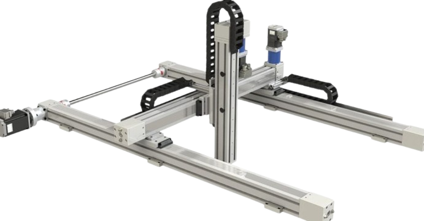

Robô Cartesiano

O robô Cartesiano é um manipulador que se movimenta em linhas retas ao longo de três eixos perpendiculares (X, Y e Z), formando um volume de trabalho em formato de cubo ou retângulo.
Conceito
Também chamado de robô gantry (pórtico) ou robô linear, o robô Cartesiano utiliza o sistema de coordenadas cartesianas para posicionar seu efetuador terminal. Por trabalhar apenas com movimentos lineares, ele é considerado um dos tipos mais simples e intuitivos de robô industrial, sendo amplamente utilizado quando precisão e previsibilidade de trajetória são mais importantes do que velocidade de movimentos complexos.
Princípio de funcionamento
Cada um dos três eixos (X, Y e Z) é acionado de forma independente por um atuador linear próprio, que pode ser um fuso de esferas, uma correia dentada ou um atuador elétrico. Um controlador (CLP ou controlador dedicado) coordena o movimento simultâneo dos três eixos para posicionar a ferramenta em qualquer ponto dentro do volume retangular de trabalho, sem a necessidade de cálculos complexos de cinemática, já que os eixos são ortogonais entre si.
Características técnicas
Alta precisão e repetibilidade, frequentemente inferior a 0,05 mm
Estrutura modular e escalável, com cursos de centímetros a vários metros
Capacidade de carga de poucos kg até centenas de kg, conforme o porte
3 eixos lineares independentes (X, Y, Z)
Programação simples, geralmente ponto a ponto
Volume de trabalho em formato retangular (cúbico)
Aplicações industriais
Pick and place de peças e embalagens
Dispensação de adesivos, tintas e selantes
Corte CNC e usinagem leve
Impressão 3D e prototipagem
Paletização de produtos
Inspeção dimensional automatizada
Integração com automação e IoT
Nos robôs cartesianos modernos, encoders instalados em cada eixo linear enviam continuamente dados de posição e velocidade para um CLP ou controlador de movimento, que por sua vez pode publicar essas informações em uma rede industrial.
Essa conectividade permite o monitoramento remoto do ciclo de produção, o acompanhamento de indicadores como o OEE (Overall Equipment Effectiveness) e a manutenção preditiva, já que desvios de corrente ou vibração nos motores podem indicar desgaste de componentes antes de uma falha.
Modelos comerciais
- Atuadores elétricos de alta precisão
- Configurações de 1 a 3 eixos combináveis
- Controladores com interface para redes industriais
- Módulos lineares combináveis para X, Y e Z
- Alta velocidade de posicionamento
- Uso comum em eletrônica e embalagem
- Estrutura em pórtico (gantry) modular
- Grandes cursos para áreas de trabalho amplas
- Integração nativa com CLPs Bosch Rexroth